In this project, I extended last projects bare bones raytracer to support glass materials, mirror materials, and to simulate a thin camera lens that could be used to support depth of field. This entailed implementing a reflect function, the sample_f() method for a MirrorBDSF class, refraction, the sample_f() for a GlassBDSF class, creating a thin lens using geometry, and generating rays for the thin lens for pixel sampling.
Part 1: Mirror and Glass Materials
Describe what you did in Part 1. etc...
In Part 1, I made a reflect equation for BSDFs, implemented sample_f for MirrorBSDFs that uses the reflect equation, made a refraction function for BSDFs, sample_f for RefractionBSDFs that uses the refraction equation, and a sample_f function for GlassBSDFs that uses both the reflection and the refraction.
Show a sequence of six images of scene CBspheres.dae rendered with max_ray_depth set to 0, 1, 2, 3, 4, 5, and 100. The other settings should be at least 64 samples per pixel and 4 samples per light.
I rendered the following with 128 samples per pixel and 4 samples per light.

|
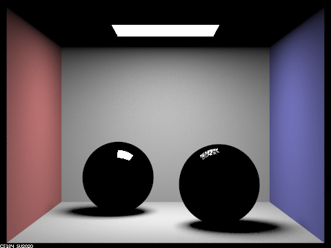
|
|
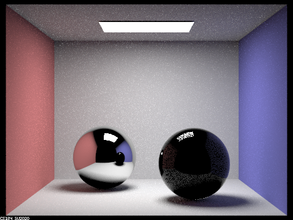
|
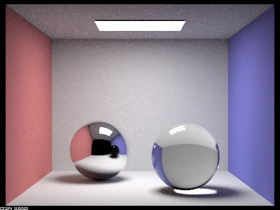
|
|
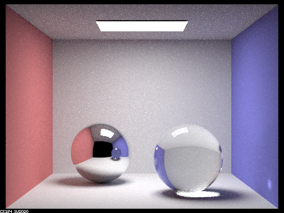
|
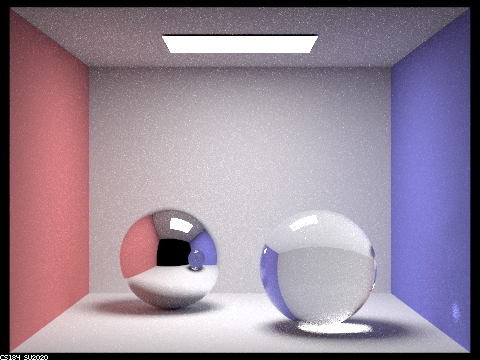
|
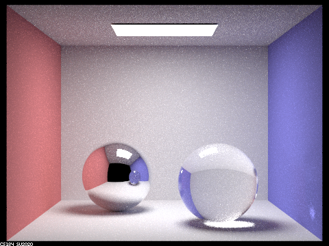
|
As we can see, as the ray depth increases the quality of reflections and refractions increases (especially when a ray bounces off multiple objects that reflect or refract).
Point out the new multibounce effects that appear in each image.
At ray depth of 0, no light falls on the scene but we get direct lighting from the light.
At ray depth of 1, direct light falls onto the scene. We see the light's reflection on the
spheres but otherwise the spheres don't reflect anything else from the scene. Additionally,
no light bounces to illuminate the ceiling because there is only one bounce.
At ray depth of 2, we can see relfections on both spheres, but no refraction. We also can
see that there is global illumination and that the ceiling is illuminated.
At ray depth of 3, we can see both refraction and relflection. However, we can only see
reflection in the glass sphere viewed from the mirror sphere.
At ray depth of 4, we can see both reflection and refraction in the glass sphere viewed from
the mirror sphere.
At ray depth of 5 global illumination improves.
At ray depth of 100, global illumination improves greatly.
Explain how these bounce numbers relate to the particular effects that appear.
At ray depth of 0, no light shows up other than the source because we can't bounce a Ray
off of any part of the scene.
At ray depth 1, we only see direct light and only the reflection of light shows up because
we can bounce 1 light ray. Since it takes 1 depth to render direct lighting in the scene, it will
take 1 more bounce to render direct lighting in reflections.
At ray depth of 2, we can that this is why the reflections only show direct illumination even though
the scene is globally illuminated. We can also note that the glass
sphere when viewed from the mirror sphere is at zero bounce lighting now.
Since the glass sphere when viewed from the mirror sphere should progress one step, we notice that it
is now at direct lighting and reflects. This occurs because objects n bounces away from the scene's
ray depth will reflect the scene's global illumination n steps later.
We could also notice that a ray depth of 3 means that we get refraction as well as reflection in the glass.
This occurs because refraction requires two bounces while reflection only requires one.
This logic holds when we are able to notice refraction in the glass sphere when viewed from the mirror sphere
at ray depth of 4. This pattern will recurse and recurse as ray depth increases. The upgraded quality of global
illumination is because we have more bounces so pixels are more likely to converge.
Part 4: Depth of Field
Describe what you did in Part 4. etc...
In Part 4 I upgraded project 3-1's camera into one that can support thin-lens simulation. This enabled my raytracer to focus on specific parts of the scene based on depth. A user could make the radius of the lens larger to make the image more blurry and adjust the depth of the focal point to focus on a certian spot.
In a few sentences, explain the differences between a pinhole camera model and a thin-lens camera model.
The main difference between a pinhole camera model and a thin-lens camera model
is that the pinhole camera model renders every pixel in perfect focus while a
thin-lens camera model simulates the finite aperatures that appear everywhere
in the real world from cameras to our eyes. The thin-lens camera model that
I implemented supports changing the focal distance and lens radius. This means
that our thin-lens camera model can change the distance that the camera will focus
on in the scene and how blurry the parts that aren't focused on are. If we set the
lens radius of the thin-lens model, we can also simulate the pinhole camera model!
Show a "focus stack" where you focus at 4 visibly different depths through a scene.
Below I compare the differences between CBbunny.dae rendered with 256 samples per pixel, 16 light rays, 13 bounces, and an aperture size of 0.30 when I change the depth to focus on.
|
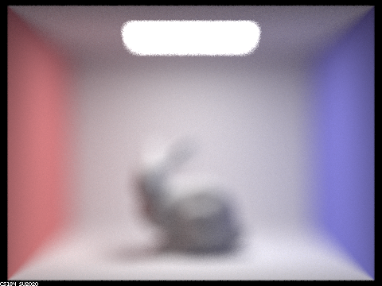
|
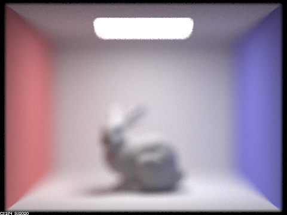
|
|
|
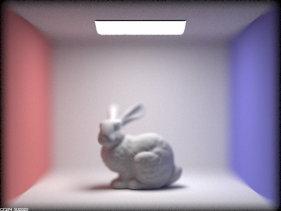
|
|
|
|
|
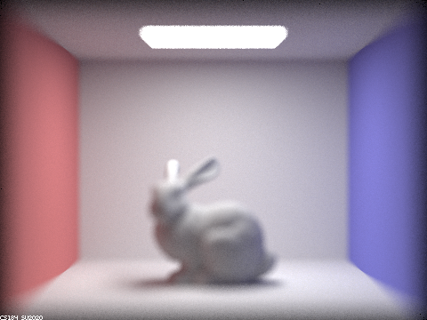
|
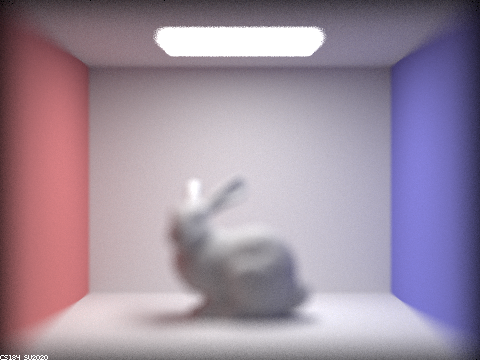
|
Here we can see the focus depth flow over the CBbunny! Note how the focus shifts from in front of the bunny at d values around 3.00, on the bunny at d values around 4.75, and behind the bunny around 5.50.
Show a sequence of 4 pictures with visibly different aperture sizes, all focused at the same point in a scene.
Below I compare the differences between CBbunny.dae rendered with 256 samples per pixel, 16 light rays, 13 bounces, and a depth of 4.56 when I change aperture sizes.
|
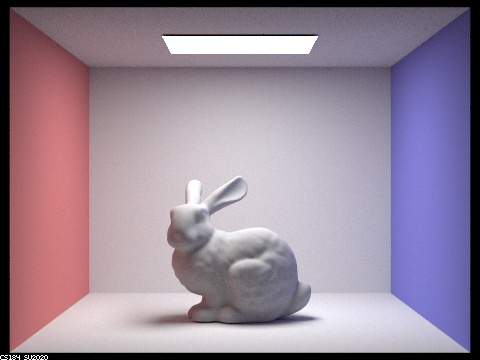
|
|
|
|
|
|
|
|
As we can see, the renders start as a pinhole model when b = 0.00, then they get progressively more blurry as the value of b increases. At around b = 0.10, we get a nice effect where the bunny is in focus and the background is blurred. This value is dependent on the relative position of the scene in comparison to the camera.
The website for my writeup is https://cal-cs184-student.github.io/sp22-project-webpages-ethangnibus/